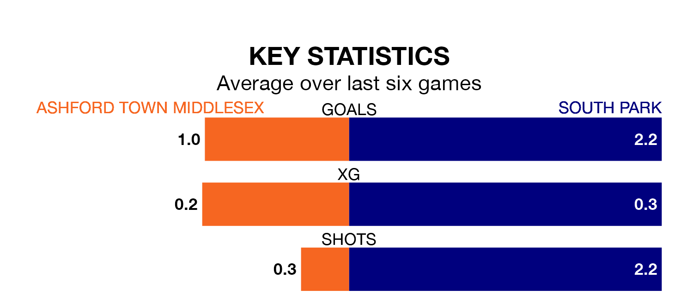

Struggling Ashford Town Middlesex face South Park at the Robert Parker Stadium on Saturday looking to build on a win in their last league outing.
After securing all three points with a 4-1 victory over Sutton Common Rovers on March 9, the Tangerines sit 18th in the Isthmian League Division One South Central.
They travel to play a South Park side eighth in the standings, who also won their last match, 6-2 against Hartley Wintney.
With 35 goals in 30 games so far this season, Ashford Town Middlesex are scoring at below the league average rate with 1.2 goals per game. And they are conceding more than average, letting in 55 goals at a rate of 1.8 per game.
South Park, meanwhile, are above average scorers, with 1.8 goals per game, compared to a league average of 1.7. They have conceded 1.6 goals per game.
The Tangerines are in disappointing form in the Isthmian League Division One South Central, with two wins and four losses from their last six games.
With two wins and two draws over that period, the away side's form is slightly better – they have taken eight points from 18, compared to the hosts' six.
In the last five years, Ashford Town Middlesex and South Park have played each other on five occasions. Ashford Town Middlesex won three of them and South Park two.
On average, the Tangerines scored 1.6 goals and South Park 1.0 in those matches.
Their last meeting was on March 25, when South Park won 1-0 at home.
Updated: 15:10 (UTC), 15/03/24